변수에는 값을 저장합니다. 그런데 모든 값이 같은 종류는 아닙니다. 정수, 실수, 문자, 참/거짓, 문자열처럼 값의 종류가 다릅니다.
Java에서는 변수에 값을 저장할 때 자료형을 먼저 정합니다. 자료형은 변수에 어떤 종류의 값을 저장할 수 있는지 알려주는 표시입니다.
1. 시작 예제: DataTypeExample.java
파일 이름은 DataTypeExample.java로 저장합니다.
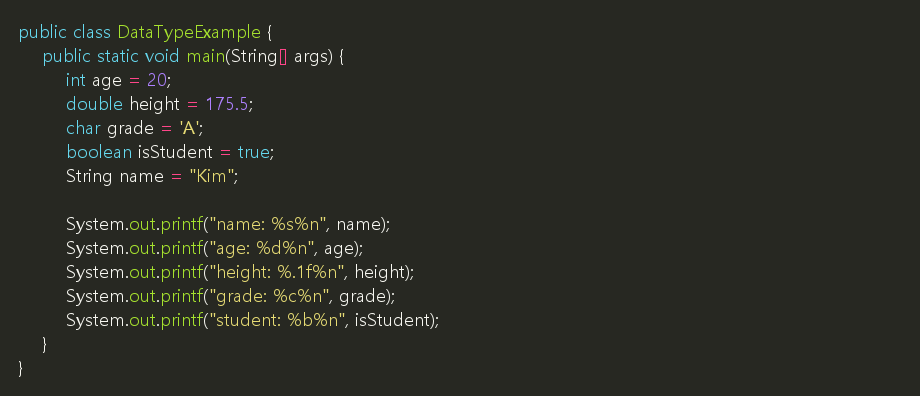
실행 결과:
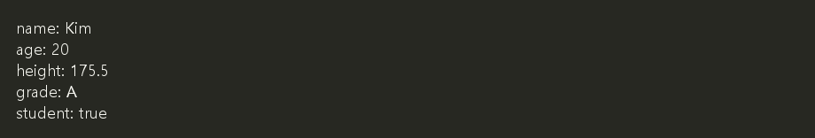
2. 코드 살펴보기
| 코드 | 설명 |
|---|---|
int age = 20; |
정수 값을 저장합니다. |
double height = 175.5; |
소수점이 있는 실수 값을 저장합니다. |
char grade = 'A'; |
문자 하나를 저장합니다. 작은따옴표를 사용합니다. |
boolean isStudent = true; |
참 또는 거짓 값을 저장합니다. |
String name = "Kim"; |
문자열을 저장합니다. 큰따옴표를 사용합니다. |
💡 참고: char는 문자 하나, String은 여러 글자로 이루어진 문자열을 저장할 때 사용합니다.
3. 기본 자료형
Java의 기본 자료형 중 처음에 자주 사용하는 것은 다음과 같습니다.
| 자료형 | 저장하는 값 | 예 |
|---|---|---|
int |
정수 | 10, -3, 0 |
double |
실수 | 3.14, 175.5 |
char |
문자 하나 | 'A', '가' |
boolean |
참/거짓 | true, false |
⚠️ 주의: char는 작은따옴표(')를 사용하고, String은 큰따옴표(")를 사용합니다.
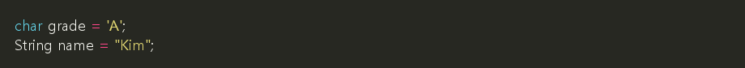
4. printf()와 자료형
printf()에서는 출력할 값의 자료형에 맞는 자리표시자를 사용합니다.
| 자리표시자 | 의미 | 예 |
|---|---|---|
%d |
정수 출력 | System.out.printf("%d%n", age); |
%f |
실수 출력 | System.out.printf("%f%n", height); |
%.1f |
소수점 첫째 자리까지 실수 출력 | System.out.printf("%.1f%n", height); |
%c |
문자 하나 출력 | System.out.printf("%c%n", grade); |
%b |
참/거짓 출력 | System.out.printf("%b%n", isStudent); |
%s |
문자열 출력 | System.out.printf("%s%n", name); |
%n |
줄바꿈 | System.out.printf("Hello%n"); |
5. 자동 형 변환
형 변환은 값의 자료형이 다른 자료형으로 바뀌는 것입니다. 작은 범위의 값을 더 큰 범위의 자료형에 넣을 때는 Java가 자동으로 바꾸어 주는 경우가 있습니다.
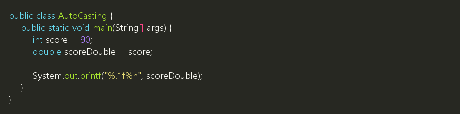
실행 결과:
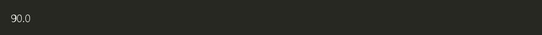
int 값 90이 double 변수에 저장되면서 90.0으로 바뀌었습니다.
6. 강제 형 변환
큰 범위의 값을 작은 범위의 자료형으로 바꿀 때는 직접 자료형을 적어야 합니다. 이때 일부 값이 사라질 수 있습니다.
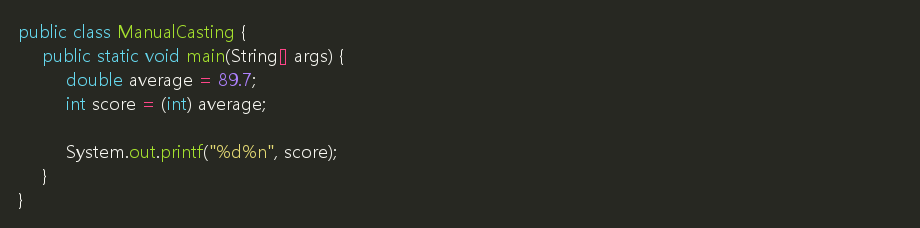
실행 결과:
double 값 89.7을 int로 바꾸면 소수점 아래가 사라집니다.
⚠️ 주의: 강제 형 변환은 값이 달라질 수 있으므로 필요한 경우에만 사용합니다.
7. 다른 예제 1: 평균 점수 계산
정수끼리 나누면 결과도 정수처럼 처리될 수 있습니다. 평균처럼 소수점 결과가 필요하면 double을 사용합니다.
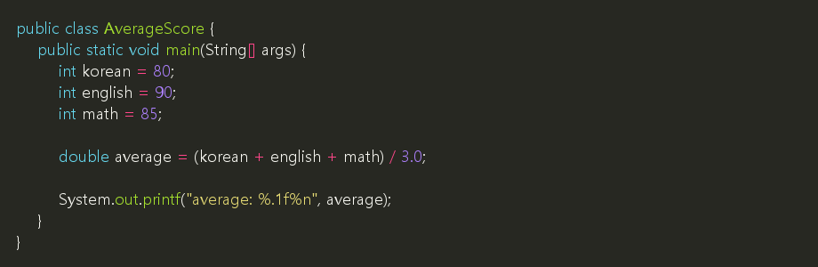
실행 결과:
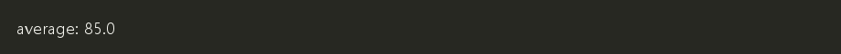
8. 다른 예제 2: 할인 가격 계산
가격은 정수로 저장하고, 할인율은 실수로 저장할 수 있습니다.
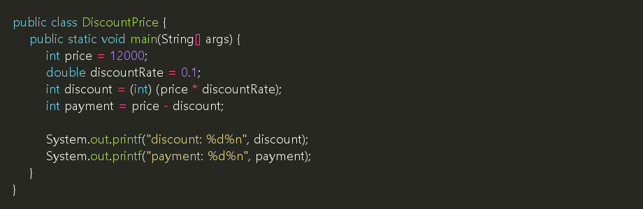
실행 결과:
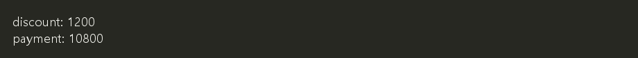
9. 연습
다음 조건에 맞는 프로그램을 작성해 봅니다.
- 파일 이름은
ProfileExample.java로 저장합니다. - 이름은
String변수에 저장합니다. - 나이는
int변수에 저장합니다. - 키는
double변수에 저장합니다. - 학생 여부는
boolean변수에 저장합니다. printf()를 사용해 각 값을 한 줄씩 출력합니다.
예상 실행 결과:
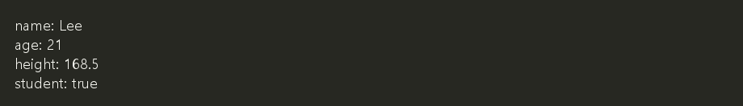
✅ 확인할 것:
- 문자열은 큰따옴표(
")를 사용합니다. - 실수 출력은
%.1f를 사용합니다. - 줄바꿈은
%n을 사용합니다.
- teaching/materials/java/4-1_data_types.md최종 수정일: 2026-09-17 02:38